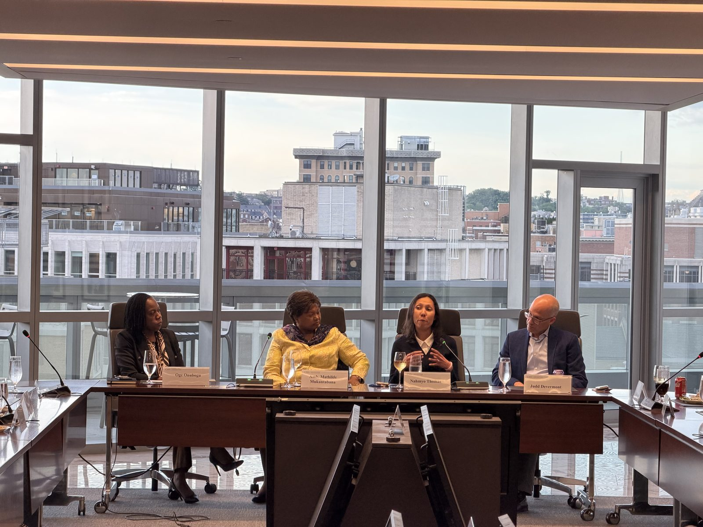

Program finale
May 2026
U.S.–Africa diplomatic relations, featuring Rwandan Ambassador Mathilde Mukantabana.
For the final session of the program year, the APA was honored to host Her Excellency Mathilde Mukantabana, Ambassador of the Republic of Rwanda to the United States, for a wide-ranging conversation on U.S.–Rwanda relations and development across the continent.